Chapter 2
Diagnostic Approach to Retinal and Choroidal Disease
This chapter includes related videos. Go to www.aao.org/bcscvideo_section12 or scan the QR codes in the text to access this content.
This chapter also includes a related activity. Go to www.aao.org/bcscactivity_section12 or scan the QR code in the text to access this content.
Highlights
Introduction
Evaluating a patient for retinal disease begins with obtaining a thorough patient history, including family history, and a careful review of systems. The patient should undergo a detailed ophthalmic examination, beginning with visual acuity measurement and including careful examination of the central and peripheral retina and testing for a relative afferent pupillary defect. Testing for retinal disease is directed by findings from the clinical examination. In addition, in-office Amsler grid testing can be performed, as it can provide evidence of macular disease, when present.
This chapter explores some of the many imaging modalities used to evaluate retinal disease. No particular modality supplies all the information needed to appropriately evaluate every disease. Rather, each modality provides different, complementary information. Thus, integrating information from multimodal imaging is necessary for efficient and precise diagnosis of retinal and choroidal diseases.
Ophthalmoscopy
The direct ophthalmoscope provides an upright, monocular, high-magnification (15×) image of the retina. Because of its lack of stereopsis, small field of view (5°–8°), and poor view of the retinal periphery, the direct ophthalmoscope has limited use, and this technique has largely been supplanted by indirect ophthalmoscopy. In indirect ophthalmoscopy, light from the illumination source is directed into the eye through a condensing lens, which helps form a flat, inverted, and reversed aerial image of the patient’s retina between the lens and the examiner. Indirect ophthalmoscopy can be performed with the binocular indirect ophthalmoscope or at the slit lamp. A variety of condensing lenses are available for use with the slit lamp or the binocular indirect ophthalmoscope, allowing the clinician to choose the best lens for the particular situation. The magnification is calculated by dividing the dioptric power of the examination lens into −60. For example, a 20-diopter (D) lens would result in a magnification of –3 (the negative sign indicates an inverted image).
Examination With the Binocular Indirect Ophthalmoscope
The binocular indirect ophthalmoscope has a unitary magnification. Through the use of prisms, it reduces the distance between the pupils in the instrument, and using a mirror, it reduces the distance from the light source to the optical axis. The examiner’s retina, the aerial image, and the patient’s retina all become conjugate (see BCSC Section 3, Clinical Optics and Vision Rehabilitation, Chapter 9). Binocular indirect ophthalmoscopes allow stereopsis, have a field of view that depends on the dioptric power of the condensing lens (higher powers deliver wider angles of view but at a lower magnification), and with ocular steering, can visualize the entire fundus—unlike direct ophthalmoscopes. If the patient’s pupil can be fully dilated, the ora serrata may be seen without the use of any additional instruments. If the pupil cannot be widely dilated or the clinician needs to see peripheral retinal details in profile, scleral depression can be performed. Disadvantages of binocular indirect ophthalmoscopy include the resulting low magnification from the condensing lens and the inverted and reversed image.
Indirect Ophthalmoscopy With the Slit Lamp
Indirect ophthalmoscopy can also be performed with a slit lamp by using a noncontact lens, for example, a 60-D or 78-D lens. With a 60-D lens, the magnification afforded by the lens is 1×; however, the slit lamp typically has a magnification of 10× or 16×. The field of view provided by these lenses is good, a little less than 70° with the 60-D lens and more than 80° with the 78-D lens. Ocular steering can be used to evaluate a large area of the fundus. Lenses of higher dioptric powers can aid visualization of wide areas of the retina even if the pupil does not dilate. These lenses may have a field of view of 100° or more.
With noncontact indirect biomicroscopy, the power and capabilities of a slit lamp with a wide field of view may be employed without any contact with the eye; subsequent ocular imaging can proceed without a problem because no contact is made with the cornea. The main disadvantage is that the image created is inverted and reversed.
A contact lens provides one of the highest-resolution methods to view the fundus. Although these lenses provide no significant magnification, they nullify the refractive power, and potentially any astigmatism, of the cornea. The 3-mirror lens is one commonly used contact lens. The central portion is used to visualize the posterior pole directly and has a field of view of a little more than 20°. The 3 mirrors can be used to evaluate the midperiphery and far periphery of the retina as well as the iridocorneal angle. The 3-mirror lens produces a noninverted image; however, the field of view through any one component is limited, and rotation of the lens on the patient’s eye is required to visualize 360° of the peripheral fundus. Wide-field contact lenses allow visualization of peripheral pathology with fields of view up to 160° without rotation of the lens, but they produce an inverted image. All contact lenses require use of a viscous coupling fluid, which may hinder subsequent ocular imaging.
Lenses are chosen at the discretion of the examining clinician, according to what is needed for the specific examination. For example, an opacified posterior capsule with a small posterior capsulotomy may inhibit good visualization of the retinal periphery with a 3-mirror lens but pose no significant problem for a wide-field contact lens. For more information about lens choice and indirect ophthalmoscopy, see the following reference.
Roybal CN. Indirect ophthalmoscopy 101. American Academy of Ophthalmology. May 15, 2017. Accessed January 17, 2022. https://www.aao.org/young-ophthalmologists/yo-info/article/indirect-ophthalmoscopy-101
Imaging Technologies
Fundus Camera Imaging
Fundus camera imaging employs the optical principles of indirect ophthalmoscopy. The objective lens is used to deliver a cone of light through the entrance pupil. Light reflected from the eye subsequently forms a flat, inverted aerial image within the body of the camera. This image is transferred to and projected onto an image sensor through a system of relay lenses. Fundus cameras use flash illumination to obtain high-quality images of the eye (a capacitor must be charged to power the flash unit; consequently, fundus cameras typically record images at a speed of only about once per second).
Color fundus photography provides photographic records of the state of a patient’s fundus for their medical records; these images may also be used in research and for teaching. Because a large amount of information can be extracted from a simple color fundus photograph (Fig 2-1A, B), this mode of imaging has been the cornerstone of many large epidemiologic and treatment studies. The color rendition is the best of any imaging system in terms of color accuracy, noise, and resolution.
With the addition of different filters, the fundus camera can be used to perform fluorescein angiography, indocyanine green angiography, and fundus autofluorescence imaging (Fig 2-1C); these techniques are discussed later in the chapter.
Imaging from fundus cameras may be affected by cloudy media, with light scattering obscuring fundus details and reducing image contrast.
Scanning Laser Ophthalmoscopy
The confocal scanning laser ophthalmoscope (SLO) functions as both an ophthalmoscope and a fundus camera and allows additional applications, such as fluorescein angiography and autofluorescence imaging. The SLO generates retinal images by scanning an illuminated spot on the retina in a raster pattern and uses a Maxwellian view system to build the retinal image. Because the system is confocal, the scattered light can be rejected by the crystalline lens, as can the fluorescence, allowing for the use of shorter wavelengths in autofluorescence imaging. A photodiode is used to detect the light received from the eye.
A variety of wavelengths can be used as dictated by need. A fundus photograph can be reconstructed with 3 simultaneously acquired color laser images in the blue, green, and infrared spectra; however, the color in these multicolor images is unnatural compared with that in a traditional fundus photograph (Fig 2-2A, B). Infrared imaging alone can be used to evaluate the fundus; in some circumstances, it provides more comprehensive information than that revealed by color photography. For example, some types of pseudodrusen (ie, subretinal drusenoid deposits) are not very prominent in color fundus photographs but are easy to view in infrared images. Similarly, choroidal nevi reflect infrared light, consequently appearing bright in infrared imaging. The infrared image can be used to perform eye movement tracking.
In SLO angiography, fluorescein is injected intravenously to act as a contrast agent and then imaging begins. To obtain an autofluorescent image of the fundus, the excitation laser and barrier filter are put into place, but fluorescein dye is not used and the gain is turned up. This method uses a blue-green wavelength that is absorbed by macular pigment.
A second approach to SLO uses an ellipsoidal mirror. Commercial systems using this method can obtain images that are approximately 200° wide, or ultra wide field (Fig 2-2C). With ocular steering, nearly all of the retina can be imaged. In this method, 2 lasers, a red one and a green one, are employed to obtain a pseudo–color-scaled image. As with the SLO multicolor images mentioned earlier, the color in these images is unnatural; therefore, when evaluating lesion color, clinicians should rely on the ophthalmoscopic examination rather than these images. Angiography can be performed with the use of the appropriate excitation lasers. The number of points imaged is large, and these systems do not record at video rates. Systems employing an ellipsoidal mirror have limited confocality. To obtain autofluorescent images, a green laser needs to be used.
Optical Coherence Tomography
Optical coherence tomography (OCT) is a noninvasive, noncontact imaging modality that produces micrometer-resolution images of tissue. Low-coherence light is simultaneously directed into tissue and into a reference arm. An interferometer combines the light returning from the tissue with the light from the reference arm, producing an interferogram. The benefit of using low-coherence light is that its spectral makeup changes rapidly with time; thus, light produced at a particular instant will not interfere substantially with light produced at other times. This means the exact position from which the interfering light came can be determined by the resolution dictated by the coherence length of the light source, which is typically 5–7 μm. In any given A-scan, the earlier technology of time-domain (TD) OCT is used to interrogate each point in the tissue sequentially. In more modern techniques, for example either spectral-domain (SD) or swept-source (SS) OCT, a more efficient approach is taken. In SD-OCT, a broad-spectrum light source is used, and the interferogram produced varies with the reflectivity of the tissue. SS-OCT uses a more complicated light source that sequentially scans through successive wavelengths of light across a spectral range. SS-OCT and SD-OCT produce higher-resolution images than TD-OCT and have largely replaced TD-OCT in the clinic.
Compared with SD-OCT, SS-OCT has the following advantages:
On the other hand, SD-OCT imaging devices are less expensive than SS-OCT devices, and they have better axial resolution. Although simultaneous imaging of the vitreous to the choroid is better with SS-OCT, SD-OCT can image the choroid well by using enhanced depth imaging (EDI). EDI is useful for determining choroidal thickness.
Both SD-OCT and SS-OCT create an A-scan through tissue. B-scans consist of a collection of many A-scans conducted through a plane of tissue. A volume scan consists of an assembly of numerous B-scans; this volume scan is stored in computer memory as a block of data in which each memory location stores a value that corresponds to a specific small volume of tissue. The voxels (a portmanteau of volume and pixels) in the volume of data may be represented in many ways; one simple way is to make planar slices, producing an image called a C-scan. C-scans are difficult to interpret because in a curved structure, many planes of tissue can be crossed. Another, more advanced method is to segment the data according to tissue planes; a thickness of voxels presented this way is called an en face scan. This technique can be used to measure the thickness of various tissues, for example, the retinal nerve fiber layer. Maps of the thickness of the retina or a specific retinal layer can also be produced. Actual correlation between OCT scans and histology of the retina continues to be an area of active research (Activity 2-1).
ACTIVITY 2-1 Optical coherence tomography (OCT) terminology, based on the International Nomenclature for OCT Panel
for Normal OCT Terminology.
Access all Section 12 Activity at www.aao.org/bcscactivity_section12.
Reproduced from Staurenghi G, Sadda S, Chakravarthy U, Spaide RF; International Nomenclature for Optical Coherence Tomography (IN·OCT) Panel. Proposed lexicon for anatomic landmarks in normal posterior segment spectral-domain optical
coherence tomography: the IN·OCT consensus. Ophthalmology.
2014;121(8):1572–1578. Copyright 2014, with permission from Elsevier.
In addition to B-scans and en face imaging, volume rendering of OCT data is possible and shows the 3-dimensional character of tissue (Fig 2-3). Compared with ordinary B-scans, volume rendering is computationally intensive. It is used in radiology but is not yet widely used in ophthalmology.
Some OCT scanners offer eye movement tracking. With the addition of this feature, ocular motion can be detected and corrected in the final image, improving the quality of the resulting scan. Tracking methods rely on recognizing fundus features and registering the scan pattern with the fundus image. This capability expands the utility of OCT; with it, scans interrupted by patient blinks still produce usable images. Also, it is possible to perform repeated scans of the same fundus location over time, enabling assessment of disease progression (Fig 2-4).
Optical Coherence Tomography Angiography
In a series of images taken at a sufficient interval, a moving object will appear at different positions on the successive images. When these images are compared pixel by pixel, nonmoving regions will show no change, while moving objects will produce areas that show high variance. If the color black is assigned to areas of low variance (ie, areas that do not move) and the color white is assigned to areas with high variance, the resulting image will highlight movement; this is called motion contrast. The retina has no moving parts, except for the flow of blood. If the images are high resolution, successive retinal images can show the movement of blood through the retina. Images taken with OCT are not only high resolution but also depth resolved. Therefore, data obtained from tissue at one point in time can be compared with data obtained from the same tissue at successive points in time. The result is a 3-dimensional visualization of movement within the retina, corresponding to blood flow in its various layers.
Unlike fluorescein angiography, which can visualize only the superficial capillary plexus, OCT angiography (OCTA) can image all capillary layers, including the superficial plexus, the radial peripapillary capillary network, and the deep capillary complex. This provides huge opportunities to advance our understanding of retinal diseases. Other advantages of OCTA over fluorescein angiography are that it is noninvasive and faster for imaging of the retinal circulation. However, OCTA cannot show vascular leakage, which fluorescein angiography can demonstrate in diseases such as retinal vasculitis (see the section “Fluorescein angiography” later in the chapter). En face OCTA offers another way to visualize flow information. En face imaging of flow in the retina is a useful technique because the resulting image of the retina is arranged in layers, as is its blood supply. In this method, a slab of the flow information corresponding to the expected position of a layer of vessels is selected. Next, the brightest pixel in each column of voxels is selected and displayed; this is called a maximal intensity projection. This projection creates a flat image from the data, which exists in 3 dimensions.
OCTA can visualize the retinal vasculature at a higher resolution than any other current imaging modality (Fig 2-5). However, OCTA is prone to artifacts. Understanding how these artifacts are created is key to understanding and interpreting the images produced. Motion results in bright areas in the image, but this motion does not necessarily come from blood flow. For example, if the patient’s eye moves during the examination, portions of the resulting image will contain motion artifacts. Multiple automatic scans with eye movement tracking and software repair can suppress most motion artifacts. Another type of defect, called a projection artifact, is created when light passes through a blood vessel and strikes a deeper reflective structure; over time, the light that reflects from that structure will change, mimicking the overlying blood vessel. The image created will have what appears to be 2 levels of the same vessel: the first at its actual location and the second at the level of the reflecting structure. Several mathematical approaches can remove projection artifacts. A third potential issue in OCTA is the appearance of dark areas on the image. Dark areas visualized in the fundus can be the result of a lack of blood flow, or at least blood flow too slow to be detected in successive scans at the interval time used. Often, however, it is too difficult to ascertain whether there is a true lack of flow, so the dark areas on the images are called signal voids.
Clinical OCTA devices have primarily imaged the macula, but technological advances have allowed wider-field OCTA imaging (see Fig 2-5E).
Spaide RF, Fujimoto JG, Waheed NK, Sadda SR, Staurenghi G. Optical coherence tomography angiography. Prog Retin Eye Res. 2018;64:1–55. doi:10.1016/j.preteyeres.2017.11.003
Fundus Autofluorescence
Fundus autofluorescence (FAF) is a rapid, noncontact, noninvasive way to visualize fluorophores in the fundus. Intrinsic fluorophores in the retina include lipofuscin/bisretinoids and melanin. In FAF, the excitation light is introduced into the eye; fluorescence from intrinsic fluorophores is detected by using a barrier filter to exclude that excitation light from the image (see Figure 2-6 for an example of FAF imaging in a healthy eye). For example, bisretinoids accumulate within the lysosomes of retinal pigment epithelium (RPE) cells as a normal part of the aging process; they are not necessarily harmful. When RPE cells die, the contained lipofuscin disperses, resulting in a loss of autofluorescence, so that these areas appear dark on FAF images. When there is a tear in the RPE, which is usually seen in patients with choroidal neovascularization (CNV), the scrolled RPE is hyperautofluorescent because of reduplication, while the bared area shows no autofluorescence signal (Fig 2-7). This mechanism of autofluorescence gain or loss is used to monitor the absence of RPE cells in a variety of diseases. Autofluorescence is particularly helpful for monitoring the rate of growth of geographic atrophy, characterized by areas of hypoautofluorescence, and for monitoring chorioretinal lesions in posterior uveitides; when these lesions are active, hyperautofluorescence is often seen at the lesions’ borders on FAF.
Two main types of systems are used to image autofluorescence: fundus cameras and SLOs. For FAF with the fundus camera, special filters are used that are tuned to detect the signal generated by lipofuscin granules without being overcome by the interference of autofluorescence from the crystalline lens, which may be derived, in part, from tryptophan and by nonenzymatic glycosylation of lens proteins. These cameras use wavelengths that are in the green end of the spectrum, and the recorded autofluorescence begins closer to the orange wavelengths. The excitation wavelengths are not absorbed by macular pigment.
Commercial SLOs initially used blue excitation light to excite fluorescein, but these wavelengths were absorbed by macular pigment. Use of a green laser for excitation, the wavelengths of which are not absorbed by macular pigment, was later introduced and is still used today. By comparing the ratio of green light autofluorescence in 2 registered fundus images, it is possible to make a 2-dimensional map of macular pigment density.
Although lipofuscin in the RPE is the main source of autofluorescence from the fundus, accumulation of fluorophores in the subretinal space is another important signal source for the evaluation of some diseases, such as central serous chorioretinopathy. After the disease is present for a few months, the detachment becomes lighter in color and slightly more yellow, as well as hyperautofluorescent. This hyperautofluorescence is easier to detect with a fundus camera than with an SLO system for 2 main reasons. First, SLO systems are confocal; if the plane of focus is at the level of the RPE, the top of the detachment may not be in the confocal range. Second, the wavelengths used for FAF imaging with the fundus camera are more closely tuned to the fluorescence wavelengths emitted by fluorophores in the retina. On OCT imaging, an accumulation of material has been found on the back surface of the retina in eyes with central serous chorioretinopathy with hyperautofluorescent detachments. It is thought that the photoreceptor outer segments typically are phagocytized and processed by the RPE, but if the retina has been physically elevated by fluid, the photoreceptors become separated from the RPE, thus impeding phagocytosis. This mechanism of disease pathophysiology may also be seen in vitelliform deposits in vitelliform macular dystrophy, adult vitelliform lesions, the yellow material that builds up under chronic retinal detachments caused by optic pit maculopathy, and the pockets of retained subretinal fluid after detachment surgery.
Near-infrared FAF imaging using 787-nm excitation and greater than 800-nm emission reveals fluorescence that was previously attributed to melanin from the RPE and the deeper layers of the choroid. However, lipofuscin can also fluoresce when excited at the wavelengths mentioned, and it appears that during lipofuscin processing, melanosomes are fused with lysosomes to produce melanolysosomes. The melanin may bind to some of the free radicals in lipofuscin, but in any case, molecular cross-linking occurs. The resulting melanolipofuscin also fluoresces in the selected ranges. Thus, it may be possible to detect differing molecular species with near-infrared FAF.
Time-resolved fluorescence imaging has shown that different molecules can fluoresce at the same wavelengths but at measurably different times after excitation. Using time-resolved imaging with a phasor approach allows in vivo identification of various molecular species, as well as measurement of the reduction–oxidation reaction state. Studies are being conducted on hyperspectral autofluorescence in which differing wavelengths of fluorescence are measured in order to better understand the formation of component molecules.
Adaptive Optics Imaging
Adaptive optics imaging is a collection of techniques that compensates for wavefront aberrations in real time. These techniques, which were developed for use in astronomical telescopes, can help compensate for changes induced by variations in tear film, among other sources of aberration. This compensation for aberrations allows visualization of individual retinal photoreceptors and RPE cells. However, this type of imaging is extremely time-consuming and requires expensive custom-built instruments to obtain satisfactory results. Significant adoption of adaptive optics imaging in eye clinics has been prevented by the time required, the complexity of the instrumentation, and the limited ability to image all patients (eg, patients with media opacities or intraocular lenses cannot be imaged).
Retinal Angiographic Techniques
Fluorescein angiography
Fluorescein angiography (FA) is a technique used to examine the retinal circulation. It involves rapid serial photography after intravenous injection of fluorescein (Fig 2-8). Traditionally, a fundus camera or an SLO with a field of view of up to about 50° has been used for FA imaging. More recently, wide-field systems that can image most of the fundus, including the periphery, have been increasingly used (Fig 2-9).
Fluorescein ranges from yellow to orange-red in color, depending on its concentration. Fundus cameras equipped for FA have a matched pair of excitation and barrier filters. The excitation filter transmits blue-green light at 465–490 nm, the peak excitation range of fluorescein. The barrier filter transmits a narrow band of yellow light at 520–530 nm, fluorescein’s peak emission range. The barrier filter effectively blocks all visible wavelengths except the specific color of fluorescein.
Fluorescein is approximately 80% protein-bound in circulation; the blood–retina barrier prevents it from diffusing into retinal tissue. However, leakage can show on FA in areas with new vessel growth, which lack a blood–ocular barrier, or regions with blood–ocular barrier defects induced by inflammation or ischemia. Fluorescein readily leaks from the choriocapillaris, staining the surrounding tissue. This rapid leakage, as well as the light absorption and scattering by the pigment in the RPE and choroid, prevents widespread use of fluorescein in choroidal imaging.
For the procedure, normally, 2–3 mL of a 25% sterile solution or 5 mL of a 10% sterile solution is injected in the antecubital vein. Typically, the dye is visible in the choroid within 8–12 seconds; filling of the retinal arterioles occurs 11–18 seconds after injection (arterial phase; see Fig 2-8A). Complete filling of the arteries and capillaries and the appearance of thin columns of dye along the walls of the larger veins (laminar flow; see Fig 2-8B) occur 1–3 seconds later (arteriovenous phase). Complete filling of the veins occurs over the subsequent 5–10 seconds (venous phase; see Fig 2-8C). The dye begins to recirculate 2–4 minutes after injection (recirculation, or mid phase). The late phase, occurring after 4–5 minutes (see Fig 2-8D), demonstrates the gradual elimination of dye from the retinal and choroidal vasculature.
The choroid may not fill uniformly. Any areas in the choroid that do not fill by the time the retinal circulation reaches the laminar flow stage are considered signs of abnormal choroidal filling. Once dye reaches the choriocapillaris, it leaks and stains Bruch membrane and the stroma, and details in the choroid are lost. Delay in the initial filling of the retinal vasculature is most commonly seen in patients with retinal vascular occlusions. During FA, the fovea appears darker than the surrounding areas because of the presence of macular pigment; also, the RPE cells beneath the fovea are slightly taller and contain more melanin than peripheral RPE cells, and there are no retinal vessels.
Abnormalities observed with FA can be grouped into 2 main categories:
In a fluorescein angiogram, reduction or absence of normal fluorescence is called hypofluorescence and is present in 2 major patterns:
Vascular filling defects are abnormalities in which retinal or choroidal vessels fail to fill because of an intravascular obstruction that results in nonperfusion of an artery, vein, or capillary (see Fig 2-9A). These defects appear as either a delay in or complete absence of filling of the involved vessels. Blocked fluorescence occurs when excitation or visualization of the fluorescein is obstructed by fibrous tissue, pigment, or blood that blocks normal retinal or choroidal fluorescence in the area. The depth of a lesion can be easily determined by relating the level of the blocked fluorescence to details of the retinal circulation. For example, if lesions block the choroidal circulation but retinal vessels are present on top of this blocking defect, the lesions are located above the choroid and below the retinal vessels.
Hyperfluorescence refers to fluorescence that is abnormally excessive, typically extending beyond the borders of recognized structures. This manifests in several major patterns (Table 2-1; Video 2-1; see also Fig 2-9):
VIDEO 2-1 Early-phase fluorescein angiogram.
Courtesy of Lucia Sobrin, MD.
Access all Section 12 videos at www.aao.org/bcscvideo_section12.
Leakage is a gradual, marked increase in fluorescence over the course of the study and results from seepage of fluorescein molecules across the blood–retina barrier. When the outer blood–retina barrier is compromised, the dye traverses the RPE and enters the subretinal space or neurosensory retina. When the inner blood–retina barrier is compromised, the dye leaks through vascular walls into the retinal parenchyma, fibrotic tissue, and cystoid spaces (Fig 2-10). Dye can also leak through the posterior blood–retina barrier (the RPE) and accumulate in the subretinal space, fibrotic tissue, or directly into the retina, if the external limiting membrane of the retina is compromised.
Staining refers to a pattern of hyperfluorescence in which the fluorescence increases in brightness through transit views and persists in late frames, but the borders remain intact throughout the study. Staining results from entry of fluorescein into a solid tissue or into material that retains the dye, such as a scar, drusen, blood vessel walls, optic nerve tissue, or sclera.
Pooling is the accumulation of fluorescein in a fluid-filled space in the retina or choroid (see Fig 2-9D). As fluorescein leaks into the space, the margins of the space trap the fluorescein and appear distinct, for example, as seen in an RPE detachment in central serous chorioretinopathy.
A transmission defect, or window defect, refers to a view of the normal choroidal fluorescence through a defect in the pigment of the RPE. In a transmission defect, hyperfluorescence occurs early, corresponding to filling of the choroidal circulation, and reaches its greatest brightness with the peak of choroidal filling. This fluorescence does not increase in brightness or size and usually fades in the late phases as the choroidal fluorescence becomes diluted by blood that does not contain fluorescein. The fluorescein remains in the choroid and does not enter the retina.
Multiple defects may be present in a diseased eye. For example, in an older adult patient with CNV, the choroid often shows segmental filling delays; hyperfluorescence is seen in the fovea because of the proliferation of vessels that leak; and there is late leakage from CNV (Fig 2-11).
Haug S, Fu AD, Johnson RN, et al. Fluorescein angiography: basic principles and interpretation. In: Schachat AP, Wilkinson CP, Hinton DR, Sadda SR, Wiedemann P, eds. Ryan’s Retina. 6th ed. Vol 1. Elsevier; 2017:1–45.
Adverse effects of fluorescein angiography All patients injected with fluorescein experience a temporary yellowing of the skin and conjunctiva that lasts 6–12 hours. The most common adverse effects include nausea and vomiting (in approximately 5% of injections) and the development of hives (also in approximately 5% of injections). The nausea passes in a few seconds without treatment. Hives, unless very mild, are usually treated with diphenhydramine. More serious adverse effects such as hypotension, shock, laryngeal spasm, or even death (approximately 1:222,000) have occurred, but only in rare instances. A physician should be on the premises when FA is occurring, and a crash cart should always be available. Prior urticarial reactions to fluorescein increase a patient’s risk of having a similar reaction after subsequent injections; however, premedicating the individual with antihistamines, corticosteroids, or both appears to decrease the risk. Extravasation of the dye into the skin during injection can be painful, requiring application of ice-cold compresses to the affected area for 5–10 minutes. Close follow-up of the patient over hours or days until the edema, pain, and redness resolve is advised. Although teratogenic effects have not been identified, many ophthalmologists avoid using FA in pregnant women in the first trimester unless absolutely necessary. In women who are lactating, fluorescein is transmitted to breast milk.
Indocyanine green angiography
Indocyanine green (ICG) is a water-soluble tricarbocyanine dye that is almost completely protein-bound (98%) after intravenous injection. Because the dye is protein-bound, diffusion through the small fenestrations of the choriocapillaris is limited. The intravascular retention of ICG, coupled with its low permeability, makes ICG angiography (ICGA) ideal for imaging choroidal vessels. ICG is metabolized in the liver and excreted into the bile. Both the excitation (790–805 nm) and emission peak (825–835 nm) are in the near-infrared range. See Figure 2-12 for an example of ICGA in a healthy eye.
ICGA is a valuable tool for identification of choroidal diseases (Video 2-2). It is used to image polypoidal choroidal vasculopathy, which is a common form of CNV (Fig 2-13), and to provide important information about the pathophysiology of type 3 neovascularization (also known as retinal angiomatous proliferation). With the use of ICGA, it was discovered that patients with drusen could have asymptomatic CNV. ICGA, particularly ultra-wide-field imaging, is helpful for diagnosing inflammatory diseases such as birdshot chorioretinopathy and multifocal choroiditis and panuveitis. Eyes with central serous chorioretinopathy show multifocal areas of choroidal vascular hyperpermeability when visualized with ICGA. However, use of this technique for diagnosing uveitis and central serous chorioretinopathy has been somewhat supplanted by autofluorescence imaging combined with EDI-OCT.
VIDEO 2-2 Early-phase indocyanine green angiogram.
Courtesy of Lucia Sobrin, MD.
Access all Section 12 videos at www.aao.org/bcscvideo_section12.
Adverse effects of indocyanine green angiography Mild adverse events occur in fewer than 1% of patients. ICG is dissolved in a 5% sodium iodide solution (sodium iodide is an additive used in table salt). Although an iodine allergy is considered a relative contraindication to ICGA, there is no reason that a shellfish allergy should preclude the use of ICG. However, angiographic facilities should have emergency plans and establish protocols to manage complications associated with either fluorescein or ICG administration, including anaphylaxis. ICG may persist in the blood longer in patients with liver disease than in healthy patients.
Ultrasonography
Contact B-scan (also called B-mode) ultrasonography is the most common form of ultrasonography used in the clinic (Video 2-3). For the procedure, a 10-MHz probe is placed on the patient’s closed eyelid. A piezoelectric crystal within the transducer is used to send and receive sound waves for each A-scan. The ultrasound beam is approximately 1 mm wide at the level of the retina, which severely limits the lateral resolution. The axial resolution, which is the resolution along the axis of the ultrasound beam, is very different in the eye versus as measured with flat surfaces. This difference is due to the interaction of the eye’s curved surfaces with the lateral summation of the signal.
VIDEO 2-3 Diagnostic B-scan ultrasonography: basic technique.
Courtesy of Patrick Lavalle, CDOS, and Lucia Sobrin, MD.
Access all Section 12 videos at www.aao.org/bcscvideo_section12.
Contact B-scan ultrasonography is used to evaluate tumor thickness, detect foreign bodies, assess choroidal and retinal detachments, and analyze the vitreous (Figs 2-14, 2-15; Videos 2-4, 2-5). Optic disc drusen can be detected by observing small areas of bright reflection in the nerve that cause shadows. Careful ultrasonography allows retinal tears to be identified. Ultrasonography can also be used to image the eye during saccades, because imaging does not occur through the pupil. Information gained during dynamic examinations is helpful for examining the vitreous and for differentiating retinoschisis from true detachment. Contact B-scan ultrasonography can produce images through opaque media, although gases and silicone oil used for vitreoretinal surgery attenuate imaging substantially.
VIDEO 2-4 Contact B-scan ultrasonography showing
choroidal effusions.
Courtesy of Patrick Lavalle, CDOS, and Lucia Sobrin, MD.
Access all Section 12 videos at www.aao.org/bcscvideo_section12.
VIDEO 2-5 Contact B-scan ultrasonography showing
a dislocated cataractous lens in the vitreous cavity.
Courtesy of Patrick Lavalle, CDOS, and Lucia Sobrin, MD.
Access all Section 12 videos at www.aao.org/bcscvideo_section12.
Ultrasound biomicroscopy (UBM) uses higher frequencies than B-scan ultrasonography and thus offers higher-resolution images but at the cost of decreased tissue penetration depth. The probe, typically 50 MHz, is contained inside a soft, water-filled bag that is placed against the patient’s eye. UBM is used to evaluate the anterior chamber and ciliary body and can also be employed to visualize the vitreous insertion anteriorly. Typical uses in a retina practice include the evaluation of tumors, iris cysts, foreign bodies, anterior suprachoroidal effusions, cyclodialysis clefts, intraocular lens placement, and hyphemas.
Singh AD, Lorek BH. Ophthalmic Ultrasonography. Saunders; 2012.
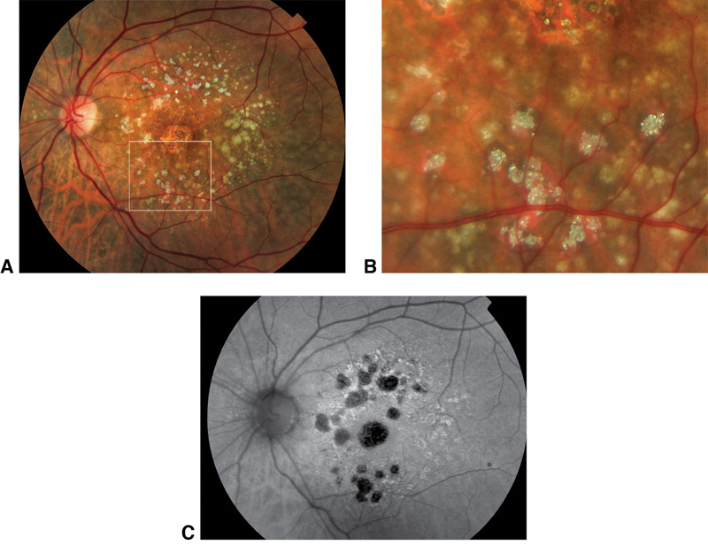
Figure 2-1 Multimodal imaging of refractile drusen and associated atrophy. A, Color fundus photograph of geographic atrophy with refractile drusen. B, Enlarging the section within the white square from A reveals a remarkable amount of information, even showing the diamondlike particles that seem to correspond to the hydroxyapatite spherules seen in histologic sections of drusen. C, Fundus autofluorescence (FAF) image shows attenuated autofluorescence in areas of geographic atrophy that are also depicted in the color photograph; in addition, FAF reveals an absence of autofluorescence colocalized to the locations of the refractile drusen. (Courtesy of Richard F. Spaide, MD.)
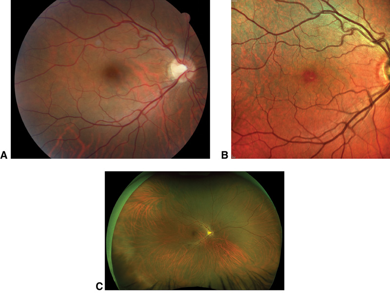
Figure 2-2 Images of a single healthy eye obtained with 3 different modalities. A, Traditional fundus photograph (50° field of view). B, Confocal scanning laser ophthalmoscopy (SLO) multicolor fundus image (30° field of view). C, Ultra-wide-field SLO fundus image produced by using an ellipsoidal mirror (200° field of view). (Courtesy of Lucia Sobrin, MD.)
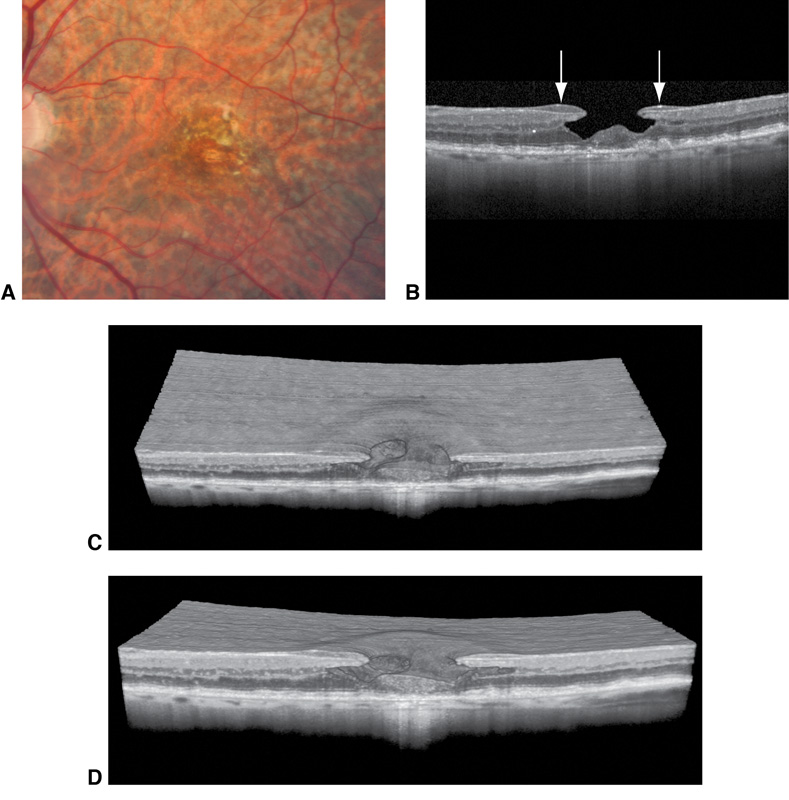
Figure 2-3 Imaging of an eye with drusen and a lamellar macular hole. A, Fundus photograph from a patient with prominent drusen and distorted vision. B, B-scan section of optical coherence tomography (OCT) imaging shows a lamellar hole with lamellar hole–associated epiretinal proliferation (LHEP). C, D, Two different views from volume-rendered imaging of the lamellar macular hole taken in sections, showing the thick epiretinal membrane, as well as the absence of induced distortion of the retina. Note the cavities within the undermined retina and the attachment of the LHEP to the central foveal tissue. (Courtesy of Richard F. Spaide, MD.)
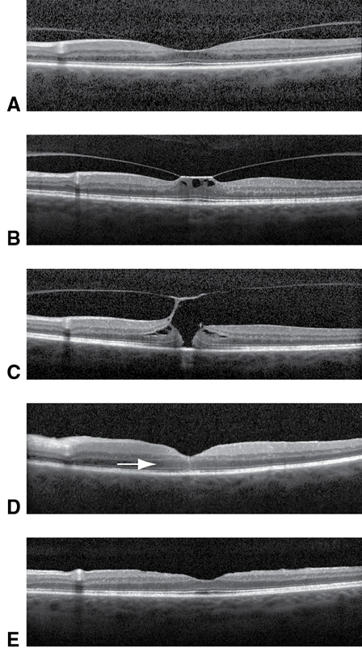
Figure 2-4 Evolution of a macular hole, visualized with OCT. A, Image from a patient with a perifoveal posterior vitreous detachment and no obvious traction on the macula. B, After 1 year, the patient experienced visual distortion; the image shows obvious traction with foveal tractional cavitations. C, Image taken 2 months later; note the full-thickness macular hole. D, Image taken 1 month after macular hole surgery; the hole is closed. Note the subtle area of increased reflectivity in the center. E, Image taken 3 months later shows the fovea with a nearly normal contour and laminar structure. (Courtesy of Richard F. Spaide, MD.)
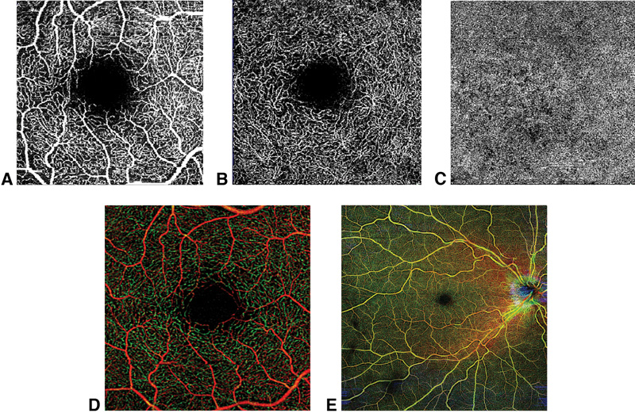
Figure 2-5 OCT angiography (OCTA) of a healthy eye (same eye in all parts). A, Superficial vascular plexus with fractal branching. B, Deep capillary plexus. Its vessels are small and do not show the same branching as the vessels of the superficial vascular plexus. C, Choriocapillaris. D, Color depth-encoded OCTA image of the macula. E, Color depth-encoded OCTA image. Wider-field fundus view shows the vessels at each layer delineated by a different color. (Courtesy of Lucia Sobrin, MD.)
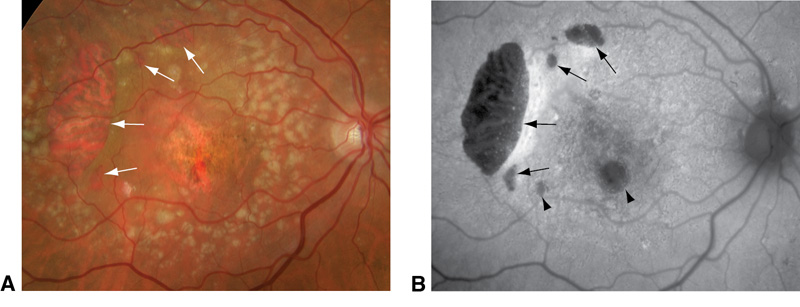
Figure 2-7 Tears in the retinal pigment epithelium (RPE). A, Fundus photograph from a patient with choroidal neovascularization (CNV) who was given an intravitreal injection of an anti–vascular endothelial growth factor agent and developed what appeared to be 4 RPE tears (arrows). B, FAF image reveals the absence of autofluorescence and an increased signal where the RPE appears to be scrolled, thus confirming the RPE tear (arrows). Small areas of atrophy are also revealed by the hypoautofluorescence (arrowheads). (Courtesy of Richard F. Spaide, MD.)
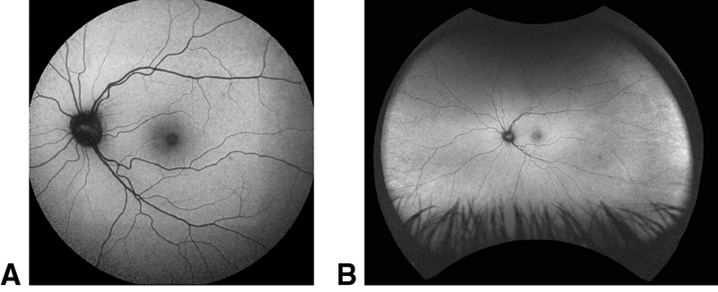
Figure 2-6 Fundus autofluorescence images of a healthy eye, acquired using scanning laser ophthalmoscopy. Two different devices were used, each with a different field of view: central (A) and ultra-wide-field (B). (Courtesy of Lucia Sobrin, MD.)
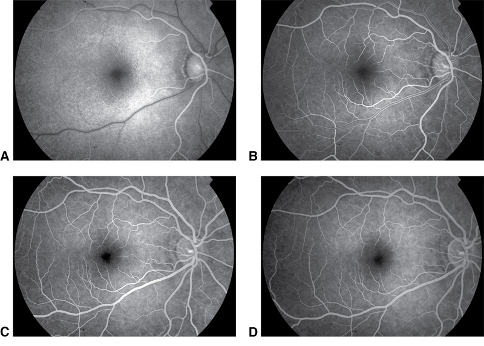
Figure 2-8 Fluorescein angiography of a healthy eye. A, The choroid fills approximately a half-second before the retina. The image shows the dye front beginning to enter the retinal arteries. B, Laminar filling after dye injection. C, Arteriovenous phase. D, In the late phase, the fluorescence decreases as the dye is removed from the bloodstream. (Courtesy of Richard F. Spaide, MD.)
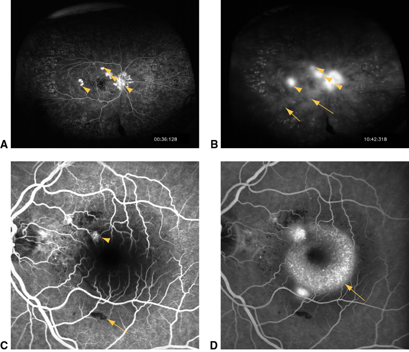
Figure 2-9 Examples of different patterns of hyperfluorescence and hypofluorescence in fluorescein angiography (FA). A–B: Wide-angle FA of an eye with posterior uveitis, retinal vasculitis, and retinal neovascularization. Retinal neovascularization of the optic nerve head and retina shows early leakage (arrowheads, A), which increases in the late frame (arrowheads, B). The early frame (A) shows macular nonperfusion, and the late frame (B) shows staining of laser scars in the periphery and inflammation-related deep multifocal leakage (arrows). C–D: FA of an eye with idiopathic polypoidal choroidopathy and drusen. The early frame (C) shows staining of the drusen, and both early and late (D) frames reveal leakage from the choroidal polyp (arrowhead, C). There is also blockage of fluorescence in the inferior macula in an area of hemorrhage (arrow, C). The late frame demonstrates pooling of fluorescein (arrow, D) under a serous retinal detachment centrally. Video 2-1 of initial dye-filling frames shows the onset of leakage from the polypoidal lesion in the superonasal macula. (Courtesy of Lucia Sobrin, MD.)
|
Table 2-1 Hyperfluorescence Patterns: Differences in Fluorescence Brightness |
||||||||
|
Change Over Time |
Leakage |
Staining |
Pooling |
Window Defect |
||||
|
Brightness |
Increase |
Increase |
Same/increase |
Decrease |
||||
|
Size |
Increase |
No change, irregular shape |
No change, regular shape (round or oval) |
No change |
||||
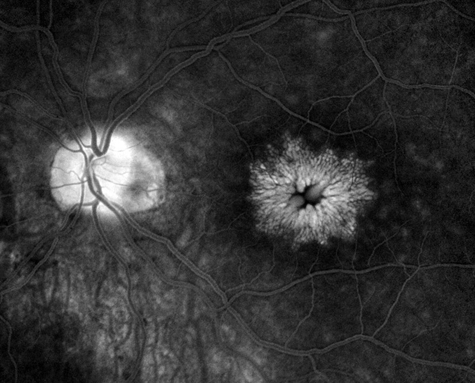
Figure 2-10 Fluorescein angiogram showing an eye with postsurgical cystoid macular edema. Fluorescein pools in the petalloid cystoid spaces within the central macula, and there is late staining of the optic nerve head. (Courtesy of Richard F. Spaide, MD.)
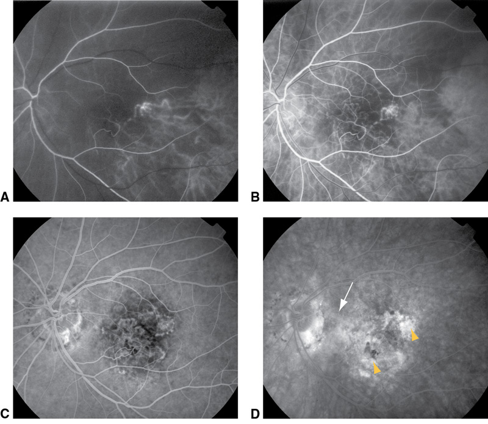
Figure 2-11 Fluorescein angiography of an eye with CNV. A, The choroid shows delayed filling. By the time dye reaches the central retinal artery, only a few choroidal vessels contain dye. B, In the early laminar-filling stage, a large portion of the choroid still shows poor filling. C, In the arteriovenous stage, the choriocapillaris appears uniformly filled. The clearly defined network of choroidal neovascular vessels is revealed in the central macula. D, The late-phase angiogram reveals leakage around the vessels with the earliest filling, an image consistent with classic CNV (arrowheads). There is also late staining and mild leakage from a poorly defined region (arrow), which is consistent with occult CNV. (Courtesy of Richard F. Spaide, MD.)
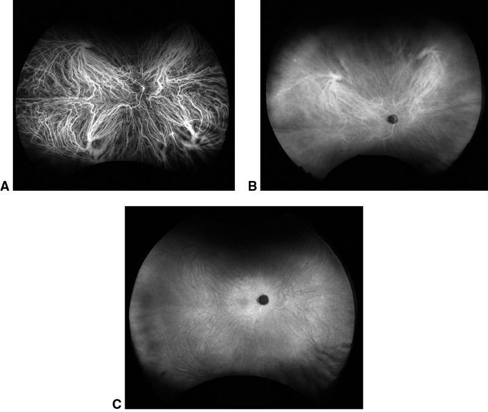
Figure 2-12 Wide-field indocyanine green angiography (ICGA) of a healthy eye. A, The early phase of ICGA is characterized by the first appearance of ICG dye in the choroidal circulation. Large choroidal arteries and veins and the retinal vasculature can be observed. B, Between 5 and 15 minutes after injection, the middle phase occurs; the choroidal veins become less distinct, and a diffuse homogeneous choroidal fluorescence is observed. Hyperfluorescence of the retinal blood vessels is diminished. C, In the late phase, which occurs approximately 15 minutes after injection, less retinal and choroidal vasculature detail is observed. (Courtesy of Lucia Sobrin, MD.)
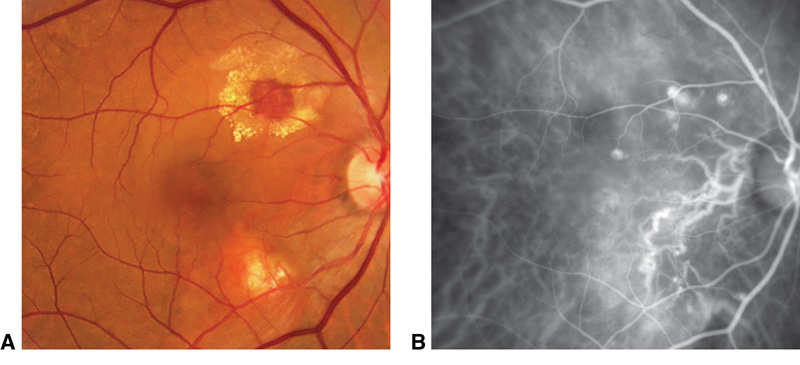
Figure 2-13 Polypoidal choroidal vasculopathy. A, Fundus photograph shows an area of lipid exudation surrounding a hemorrhage, large orange-colored vessels, and an area of decreased pigmentation inferotemporal to the optic nerve. B, The ICGA image clearly shows the sub-RPE vessels affected by polypoidal choroidal vasculopathy. (Courtesy of Richard F. Spaide, MD.)
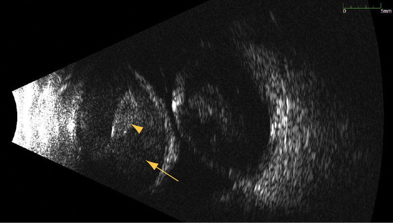
Figure 2-14 Contact B-scan ultrasonography shows massive choroidal effusions (“kissing choroidals,” or appositional choroidal detachment) containing liquefied (arrow) and clotted (arrowhead) blood. The corresponding video (Video 2-4) shows the swirling of the blood and clot within the choroidals with eye movement. Dynamic evaluation of ocular contents during ultrasonography is a powerful tool. (Courtesy of Patrick Lavalle, CDOS, and Lucia Sobrin, MD.)
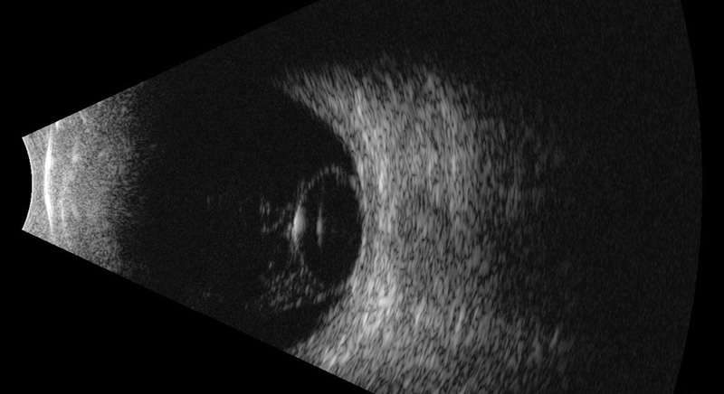
Figure 2-15 Dislocated cataractous lens in the vitreous cavity. B-scan view shows a strongly reflective ovoid lesion with moderately reflective internal signals consistent with a dislocated lens. The corresponding video (Video 2-5) shows the vitreous and lens and their interactions during eye movement. (Courtesy of Patrick Lavalle, CDOS, and Lucia Sobrin, MD.)